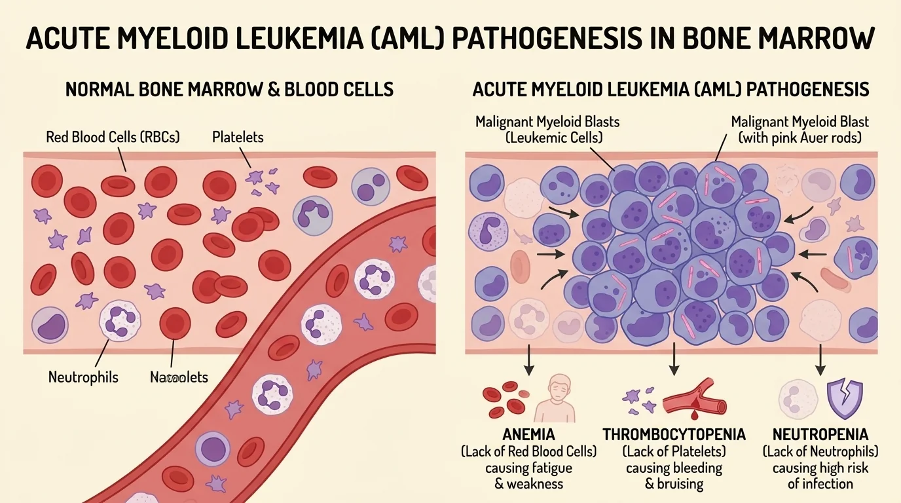

成人急性骨髓性白血病（AML）完整臨床指南
從疑似 APL 急症、ICC／WHO5 分類與 ELN 風險，到誘導、MRD 追蹤與異體移植。
1. 流行病學與致病機轉
急性骨髓性白血病（AML）是成人常見的急性白血病，診斷中位年齡約 68 歲。帶有致病基因異常的造血前驅細胞克隆擴增、分化受阻，使正常造血受抑制。常見表現是貧血、血小板低下與感染。
- 危險因子包括吸菸、苯或游離輻射暴露，以及既往細胞毒性治療。部分病例有 MDS、MPN、CHIP 或 CCUS 病史。
- 少數患者具有胚系易感變異（如 DDX41、CEBPA、RUNX1、GATA2）。家族史或臨床表現提示遺傳易感性時，可轉介遺傳評估。移植前選擇親屬捐贈者時，應考量家族變異。
- 圖 1 閱讀提示：對照正常造血與芽細胞擴增後的三系血球減少。部分病例可見 Auer rods，診斷須整合形態、免疫表型與遺傳結果。

2. 臨床表現與腫瘤急症
貧血可能表現為疲倦、蒼白與喘。血小板低下可見瘀青、黏膜出血。嗜中性球低下可表現為發燒或感染。也可能有肝脾腫大、皮膚白血病或骨髓肉瘤。
| 情境 | 優先辨識與處置 |
|---|---|
| 疑似 APL | 合併出血、低纖維蛋白原或 DIC 時緊急聯絡血液科，送 PML::RARA。高度疑似即啟動 ATRA 與凝血支持，待分子結果確認。 |
| 高白血球血症／白血球鬱滯 | 高白血球血症通常指 WBC >100 × 10⁹/L。白血球鬱滯可出現在更低數值。呼吸窘迫、低氧或急性神經症狀須緊急評估與降白血球處置。 |
| 腫瘤溶解症候群（TLS） | 監測鉀、磷、鈣、尿酸與腎功能。診斷時即可能出現，亦可在治療後發生。 |
| 發燒合併嗜中性球低下 | 緊急評估感染並依發燒性嗜中性球低下流程處置。 |
| 神經學急症 | 新發劇烈頭痛、意識改變或局部神經缺損，應緊急評估顱內出血及其他病因。 |
3. 治療前評估與體能狀態
- 血液與骨髓：CBC/DC、血抹片、凝血（含 fibrinogen）、肝腎功能、電解質、LDH、尿酸及適當的感染篩檢。骨髓檢查整合形態、流式細胞儀、核型與分子檢測。及早分流疑似 APL，並取得會影響第一線處方的分子結果。
- 器官功能與移植準備：依病況安排 ECG、心臟超音波等基線檢查。潛在移植候選者及早安排 HLA 檢測與捐贈者搜尋。
- 治療強度：綜合功能狀態、共病、器官功能、老年評估、病人目標與照護支持。HCT-CI 可用於移植風險評估。
| ECOG | 臨床定義 |
|---|---|
| 0 | 活動無限制。 |
| 1 | 劇烈活動受限，可走動並從事輕度工作。 |
| 2 | 可自理、無法工作，清醒時間超過一半可離床。 |
| 3 | 僅能部分自理，清醒時間超過一半在床或椅上。 |
| 4 | 完全失能，無法自理。 |
4. 診斷與分類（ICC 與 WHO5）
以報告採用的分類系統為準。門檻指周邊血或骨髓芽細胞比例，仍須整合形態與基因異常是否屬於同一病理過程。
| 情境 | ICC 2022 | WHO 第 5 版 |
|---|---|---|
| PML::RARA、RUNX1::RUNX1T1、CBFB::MYH11、NPM1 突變 | 通常須 ≥10% 芽細胞 | 無統一的最低百分比，須整合形態與分子證據 |
| CEBPA 定義型 AML | ≥10%，限 bZIP 區域 in-frame 突變 | ≥20%，包含符合定義的雙等位突變或單一 bZIP 區域突變 |
| BCR::ABL1 | ≥20% | ≥20%。兩系統均須鑑別 CML 急變期。 |
| 無 AML 定義性遺傳異常，芽細胞 10–19% | 符合條件者可歸 MDS/AML | 符合條件者可歸 MDS-IB2 或其他適用實體 |
| 骨髓肉瘤 | 髓外腫瘤可獨立診斷，需做全身血液與骨髓評估 | 同左 |
5. ELN 遺傳風險分層
ELN 2022 主要用於以高強度治療為基礎的預後分層。下表整理常見類別，完整分層須納入基因共現、細胞遺傳學與各類別的優先規則。選用低強度療法時，可參考 ELN 2024 與方案相符的分層。
| ELN 2022 | 常見異常 |
|---|---|
| 良好 | t(8;21)/RUNX1::RUNX1T1、inv(16) 或 t(16;16)/CBFB::MYH11、無 FLT3-ITD 且無不良風險細胞遺傳學的 NPM1 突變、CEBPA bZIP in-frame 突變。 |
| 中度 | NPM1 突變合併 FLT3-ITD、野生型 NPM1 合併 FLT3-ITD（無不良風險異常）、t(9;11)/MLLT3::KMT2A，及未列入其他兩類的異常。 |
| 不良 | 多數 KMT2A 重排（t(9;11) 為中度）、MECOM 重排、t(6;9)、t(8;16)、BCR::ABL1、−5/del(5q)、−7、−17/abn(17p)、複雜或單體核型、TP53 突變（VAF ≥10%）及特定骨髓增生異常相關基因突變（ASXL1、BCOR、EZH2、RUNX1、SF3B1、SRSF2、STAG2、U2AF1、ZRSR2）。良好風險亞型合併這些基因時須依 ELN 註解判讀。 |
6. 具高強度治療適應性的患者
圖解 2｜成人非 APL AML 的治療流程
確立亞型與遺傳風險 → 評估體能及治療目標 → 選擇誘導或低強度方案 → 依療效與 MRD 規劃後續。 疑似 APL 先走急症處置流程。治療選擇也受可近性、當地核准適應症與臨床試驗影響。
| 階段 | 可接受高強度治療 | 選擇低強度治療 |
|---|---|---|
| 起始治療 | 7+3 等誘導方案，依遺傳亞型及適應症選擇加藥或替代方案 | Azacitidine + venetoclax 為常用方案。部分 IDH1 突變患者可評估 azacitidine + ivosidenib。 |
| 反應評估 | 依方案安排骨髓評估，整合血球恢復、形態反應及亞型適用的 MRD。 | 早期骨髓檢查有助區分持續白血病與治療相關血球低下。 |
| 後續治療 | 依遺傳風險、MRD、復發風險及移植風險決定 cytarabine 鞏固、異體 HCT 或適用的維持治療。 | 持續評估療效、耐受性與移植可能，按方案調整週期或用藥天數。 |
- 誘導方案：7+3 通常為 cytarabine 連續輸注 7 天，加 anthracycline 3 天。FLT3 突變可依適應症評估 midostaurin，quizartinib 的第一線核准適應症為 FLT3-ITD。CD33 陽性的特定亞型（尤其 CBF-AML）可考慮 gemtuzumab ozogamicin。CPX-351 用於符合適應症的治療相關 AML 或 AML-MRC。
- 緩解判讀：ELN 2022 完全緩解（CR）包括骨髓芽細胞 <5%、無周邊血芽細胞與髓外疾病、ANC ≥1.0 × 10⁹/L 及血小板 ≥100 × 10⁹/L。第 14–21 天早期骨髓是否安排及如何判讀，依治療方案與臨床狀況決定。
- 異體移植：ELN 2022 建議在預期無移植的復發風險約 >35–40% 時考量。良好風險通常先鞏固，有異常的 MRD 動態時重新評估。中度及不良風險須個別評估移植效益與非復發死亡風險。
- MRD：依分子亞型、檢體、方法及治療時間點判讀。CBF-AML 可追蹤 RUNX1::RUNX1T1 或 CBFB::MYH11 轉錄本。單一 10⁻⁴ 數值無法代表所有檢測與移植決策。
- 維持：口服 azacitidine 可用於特定接受高強度誘導後達 CR/CRi、無法完成高強度治癒性療程的患者，依當地仿單與治療計畫評估。
常見高強度誘導方案
| 方案 | 典型第一輪框架 |
|---|---|
| Cytarabine + daunorubicin | Cytarabine 100–200 mg/m²/日連續靜脈輸注 7 天，加 daunorubicin 60–90 mg/m² 靜脈給藥 3 天。 |
| Cytarabine + idarubicin | Cytarabine 100–200 mg/m²/日連續靜脈輸注 7 天，加 idarubicin 12 mg/m² 靜脈給藥 3 天。 |
| CPX-351 | 固定比例脂質體 daunorubicin 44 mg/m² + cytarabine 100 mg/m²，第 1、3、5 天各靜脈輸注 90 分鐘。 |
表中為方案框架，實際給藥依院內方案、仿單與器官功能。CPX-351 為固定複方製劑，須使用該製劑的劑量及療程。
7. 選擇低強度治療的患者
Azacitidine + venetoclax 為初診、無法接受高強度誘導患者的主要選項。VIALE-A 中位總存活由 9.6 個月增至 14.7 個月（HR 0.66），此數字適用於試驗所研究族群。Decitabine + venetoclax 為另一選項，須依適應症與可近性選擇。
開始 venetoclax 前評估 TLS 風險、腎功能及 CYP3A 交互作用（如部分 azole 抗黴菌藥）。依方案安排降白血球、補液、降尿酸、劑量遞增與生化監測。緩解後依血球恢復、感染及骨髓結果調整治療週期。
8. 追蹤與復發／難治性 AML
- 依治療方案與亞型追蹤症狀、CBC、血抹片與適用的 MRD，必要時複查骨髓。分子指標上升時，須依指引時點與方法確認。
- 復發或難治時重新取樣，評估克隆演變及可標靶變異（如 FLT3、IDH1/2）。綜合既往治療、能否達緩解、移植適應性與試驗機會。對適合的患者，異體 HCT 是具治癒潛力的重要策略。
9. 實證與參考文獻
- 原筆記來源：Kolitz JE、Larson RA、Rosmarin AG，UpToDate《Acute myeloid leukemia in adults: Overview》。
- WHO 第 5 版髓系腫瘤分類（2022） · ICC 髓系腫瘤與急性白血病分類（2022）
- ELN 2022 成人 AML 建議 · ELN 2024 低強度治療分層 · ELN-DAVID 2025 MRD 共識更新
- ELN APL 專家指引 · ASH 高齡 AML 指引 · VIALE-A 原始試驗